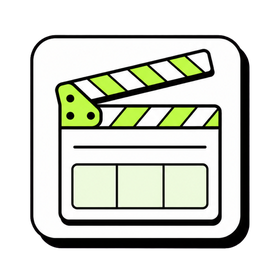
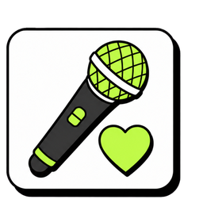
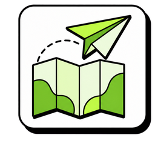
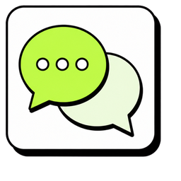

超入門
첫인사 (はじめまして！)
저랑 가볍게 인사해 볼까요?私と軽くあいさつしてみましょうか？

니즈 파악ニーズ把握
あなたのことを教えてください。答えに合わせて、最後のプランが変わります。
학습 동기 (学ぶきっかけ)
왜 한국어를 배우고 싶어요? 여러 개 골라도 돼요.どうして韓国語を学びたいですか？いくつ選んでも大丈夫です。
목표 (ゴール)
한국어로 뭐를 하고 싶어요? 하나만 골라 주세요.韓国語で何がしたいですか？1つだけ選んでください。
학습 페이스 (学習ペース)
일주일에 수업을 몇 번 받고 싶어요?1週間に何回、レッスンを受けたいですか？

체험 레슨体験レッスン
ここから25分。終わるころには、本物の韓国語の単語が読めます。約束します！
한글 첫인상 (ハングルの第一印象)
지금은 한 글자도 못 읽어도 괜찮아요. 법칙만 알면 읽을 수 있어요.今は1文字も読めなくて大丈夫。法則さえ分かれば読めます。
이미 아는 단어 (もう知っている単語)
사실 한국어 단어, 이미 꽤 알고 있어요. 그 소리를 글자로 못 읽었을 뿐이에요.実は韓国語の単語、もうけっこう知っています。その音を文字で読めなかっただけです。
글자 블록 (文字ブロック)
한 글자는 상자예요. 자리는 두 개, 자음 자리와 모음 자리.1文字は「箱」。席は2つ、子音の席と母音の席です。
모음 (母音)
まずは母音。音を覚えてから、子音を足します。
모음 ① (母音 3つ)
제가 먼저 읽을게요. 잘 듣고 따라 읽어 보세요.私が先に読みます。よく聞いて、まねして読んでみましょう。


모음 ② (母音 のこり3つ)
나머지 3개도 소리 내어 읽어 보세요.のこりの3つも、声に出して読んでみましょう。


헷갈리는 짝 (まちがえやすいペア)
가타카나는 같지만 소리는 달라요. 제 발음을 잘 듣고 따라 해 보세요.カタカナは同じでも、音は違います。私の発音をよく聞いて、まねしてみましょう。
 口を大きく開けて
오
口を大きく開けて
오 くちびるを丸く
くちびるを丸く
 丸く、小さく
으
丸く、小さく
으 くちびるを横に
くちびるを横に
소리 없는 ㅇ (音のない ㅇ)
눈치챘어요? 노란 자리엔 계속 ㅇ이 있었어요. 그런데 소리가 없어요.気づきましたか？黄色い席にはずっと「ㅇ」がいました。でも音はゼロ。
모음 자리 (母音の場所)
세로로 긴 모음은 오른쪽, 가로로 긴 모음은 아래. 이게 다예요.たて長の母音は右、よこ長の母音は下。ルールはこれだけ。
모음 읽기 (母音を読もう)
여섯 개를 소리 내어 읽어 보세요. 순서는 섞여 있어요.6つを声に出して読んでみましょう。順番はシャッフルしています。
자음 (子音)
子音は2つだけ：ㄴ と ㅁ。子音は固定したまま、母音だけ入れかえます。
자음 ㄴ (子音 ㄴ)
ㄴ은 n 소리예요. ㄴ은 그대로 두고, 모음만 바꿔서 읽어 보세요.「ㄴ」は n の音。ㄴはそのまま、母音だけ入れかえて読んでみましょう。
ㄴ 읽기 (ㄴ を読もう)
소리 내어, 멈추지 말고 읽어 보세요.声に出して、止まらずに読んでみましょう。
자음 ㅁ (子音 ㅁ)
ㅁ은 m 소리예요. 같은 방법으로, 모음만 바꿔서 읽어 보세요.「ㅁ」は m の音。同じやり方で、母音だけ入れかえて読んでみましょう。
조합표 (組み合わせ表)
외운 건 여덟 개인데, 글자는 열두 개가 됐어요. 한 줄씩 읽어 볼까요?おぼえたのは8パーツ。なのに12文字になりました。1行ずつ読んでみましょう。
섞어 읽기 (まぜて読もう)
ㄴ과 ㅁ을 섞었어요. 한 블록씩 읽어 보세요.ㄴ と ㅁ をまぜました。1ブロックずつ読んでみましょう。
모음 찾기 (母音さがし)
이번엔 색이 없어요. ㅏ가 들어간 블록을 모두 눌러 보세요.今度は色なし。「ㅏ」が入っているブロックを全部タップしてください。
듣고 고르기 (聞いて選ぼう)
둘 중에 하나만 읽을게요. 잘 듣고 맞는 쪽을 눌러 보세요.2つのうち1つだけ読みます。よく聞いて、正しいほうをタップしてください。
단어 (単語)
パーツがそろいました。本物の単語を読んで、組み立ててみましょう。
단어 읽기 (単語を読もう)
전부 아는 글자로 되어 있어요. 하나씩 읽어 보세요.全部、知っている文字でできています。1つずつ読んでみましょう。
단어 찾기 (聞いてさがそう)
제가 말하는 단어를 눌러 보세요.私が言う単語をタップしてください。
블록 만들기 (ブロックを作ろう)
밑에서 자음과 모음을 눌러서, 글자를 만들어 보세요.下の子音と母音をタップして、文字を組み立ててみましょう。
듣고 만들기 (聞いて組み立てよう)
이번엔 힌트가 없어요. 제가 말하는 글자를 만들어 보세요.今度はヒントなし。私が言う文字を組み立ててみましょう。
간판 읽기 (看板を読もう)
한국에 있다고 상상해 보세요. 간판을 소리 내어 읽어 봐요!韓国にいると想像してみてください。看板を声に出して読んでみましょう！
오늘의 결과 (今日の成果)
25분 전엔 하나도 못 읽었죠? 지금은 이만큼 읽을 수 있어요.25分前は1文字も読めませんでしたよね？今はこれだけ読めます。
앞으로의 플랜
오늘 모습과 목표에 맞춰, 튜터가 맞춤 플랜을 만들어 드려요.
레벨 체크
오늘 수업을 보고, 제가 지금 레벨을 체크할게요.
나만의 리포트
골라 주신 목표와 페이스로, 언제쯤 도착하는지 그려 봤어요.
—눌러서 고르러 가기커리큘럼
한글부터 자유로운 수다까지, 네 단계로 이어져요. 하나씩 보여 드릴게요.

오늘 해 본 게 바로 이거예요. 11레슨이면 모든 글자를 읽어요.
모음 → 자음 → 받침. 새 자리가 하나씩만 늘어나요.
문장을 통째로 외우지 않아요. 1과에 딱 2패턴씩만 나가요.
여기부터는 취향이에요. 좋아하는 세계를 골라서, 그 안에서 진짜로 쓰는 대사로 배워요.

드라마40레슨 우리 어디서 본 적 있지 않아요?~ㄴ 적 있다
케이팝40레슨 제 최애는 민지예요.A는 B예요
여행40레슨 혹시 명동역이 어딘지 아세요?~는지 알다
반말 수다40레슨 너 지금 어디 가는 거야?~는 거야?패턴 코스에는 끝이 있지만,
여기는 끝이 없어요.주제가 계속 늘어나거든요
늘어나요 +
수강료
오늘 시작하시면 첫 달에 얼마인지, 순서대로 보여 드릴게요.
3개월은 7일까지 쉬어 갈 수 있어요.
포도 수업
포도 수업이 어떤 수업인지 한눈에 보여 드릴게요.
전체 요금표
레슨권 전체예요. 표시된 금액은 한 달에 내는 돈이에요.
| 레슨권 | 기간 | 한국어 | 더블팩 |
|---|---|---|---|
| 무제한매일 1회 | 1개월 | ¥12,700 | ¥15,000 |
| 3개월 | ¥11,500 | ¥13,800 | |
| 월 8회주 2회쯤 | 1개월 | ¥10,400 | ¥12,700 |
| 3개월 | ¥9,200 | ¥11,500 |
더블팩은 한국어와 영어를 자유롭게 골라 듣는 레슨권이에요. 하루 1레슨까지는 똑같아요.
자주 묻는 질문 ①
수업에 대해 많이 물어보시는 것들이에요.
자주 묻는 질문 ②
결제랑 수강권에 대한 질문들이에요.
おつかれさまでした！👏
体験レッスンは
これで おわり！
このあと LINE でメッセージをおくりますね。
あなただけのレポートといっしょに ;)